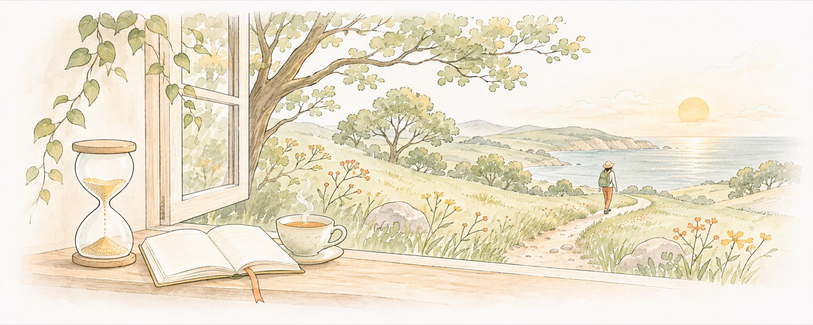

One life, and how to spend it

I’m going to die, and I only get one life. Keeping that in mind forces a different set of questions about where my time goes. What do I want to understand, and what ideas do I want to make real? Which choices only look appealing because everyone around me seems to be making them? Urgent tasks will eat every spare hour if you let them, so you have to carve out room for the bigger questions on purpose.
It also shrinks a lot of outside opinions down to their proper size. Someone else might have a passing reaction to a choice I make and forget about it five minutes later; I’m the one who has to spend the years living with it. I’d rather spend less energy guessing what strangers think, and more asking whether I want the life on the other side of my decision.
That doesn’t mean ignoring everyone. If someone has good reasons behind their opinion, it’s worth listening; they might spot a blind spot or a consequence I misjudged. What I try to separate is the argument from the approval or disapproval wrapped around it. Praise won’t solve my problem for me, and criticism is only as useful as the point underneath it.
Knowing time is limited also makes me less patient with endless deliberation. Thinking in circles about whether a path is worthwhile tells you something very different from spending time studying it or trying the work. Once you’ve tried, you have evidence to look back on: whether I’m still hooked, whether the problem is bigger than I thought, whether I want to keep going.
And when I’m taking in a view or drinking a cup of tea, I want to be there for it. Rest isn’t dead time between tasks. It’s part of life too, and you can’t measure all of it by how much work you got done. I want to be deliberate about when I’m working and when I’m off, instead of treating every quiet pocket of the day as space to cram in one more to-do.
While I’m in the middle of something, I want to be all in. Later, I want enough distance to step back and ask whether it’s still what I want to be doing. Limited time gives that question weight. It also gives me permission to change course when the answer shifts.